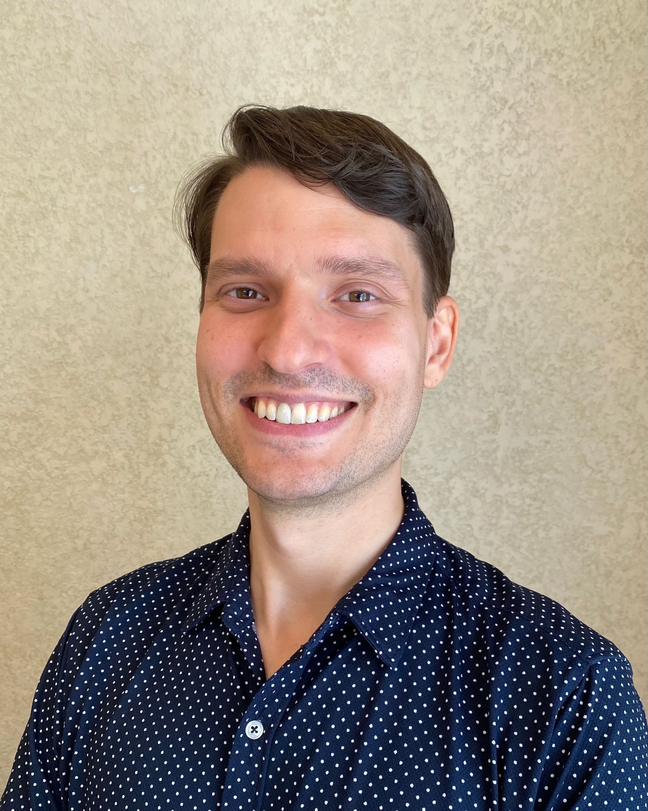

SIAM UQ minisymposium
I organized a minisymposium with Nick Boffi on measure flows for inverse problems and machine learning. Thank you to our wonderful speakers for making this minisymposium a great success!
I study mathematical machine learning for science and inverse problems.
PhD candidate
Department of Computational Applied Mathematics and Operations Research
Rice University, Houston, TX

I organized a minisymposium with Nick Boffi on measure flows for inverse problems and machine learning. Thank you to our wonderful speakers for making this minisymposium a great success!
I returned from Inverse Days in Helsinki, Finland. I also attended last year, and both times it has been the highlight of my academic year.
I attended CBMS at the University of Houston and presented a poster on measure flows in Bayes Hilbert spaces.
International Conference on Learning Representations (ICLR 2025), Singapore
SIAM UQ, Minneapolis, Minnesota, March 2026
Inverse Days, Helsinki, Finland, Dec 2025
CBMS Conference (poster), University of Houston, Dec 2025
Applied Inverse Problems 2025, Rio de Janeiro, Brazil, Jul 2025
ICLR (poster), Singapore, May 2025
Inverse Days, Oulu, Finland, Dec 2024
PhD, Computational and Applied Mathematics, 2021-present
Advisor: Dr. Maarten de Hoop
MS, Computer Science, 2019-2021
BS Computer Science, BS Mathematics, BA Economics and Chinese Language, 2009-2014
Measure Flows for Inverse Problems and Machine Learning
SIAM UQ '26, March 2026
NASA Orbital Transfer Project
Rice University, Spring 2025